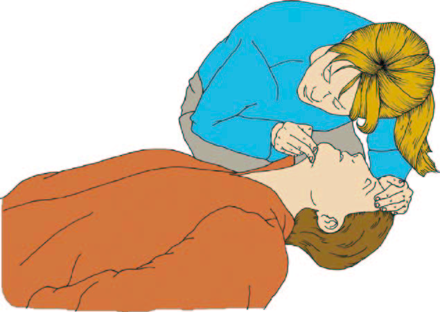

EHBO
The essentials
Je ziet iemand op de grond liggen, op een plaats waar je dit niet verwacht. Wat doe je?
Wat is hulp bieden NIET
Veiligheid!
JOS
Jezelf
Omstaanders
Slachtoffer
Bewust?
Reageert het slachtoffer op prikkels
Bewust?
Schud de schouders van het slachtoffer en spreek hun aan
Zorg voor een pijn prikkel en kijk wat de reactie is
Oh shit!
Er is geen reactie!
Is er een ademhaling?

Gelukkig, er is nog een ademhaling.
Veiligheidshouding, en bellen naar 112!

Test van Emma